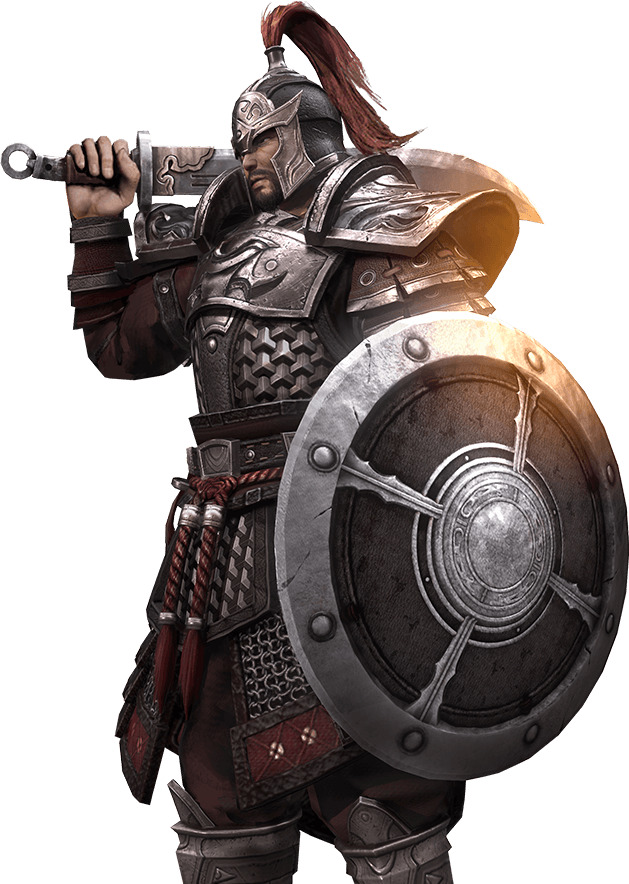
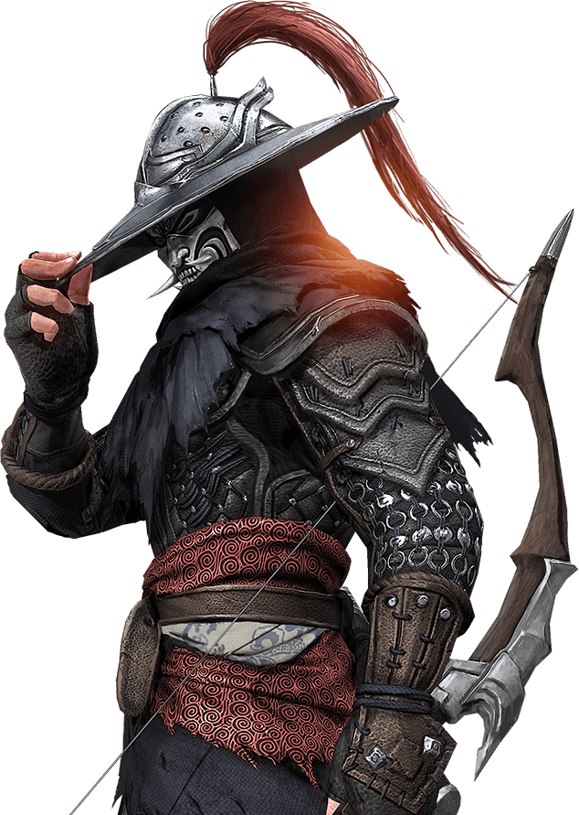
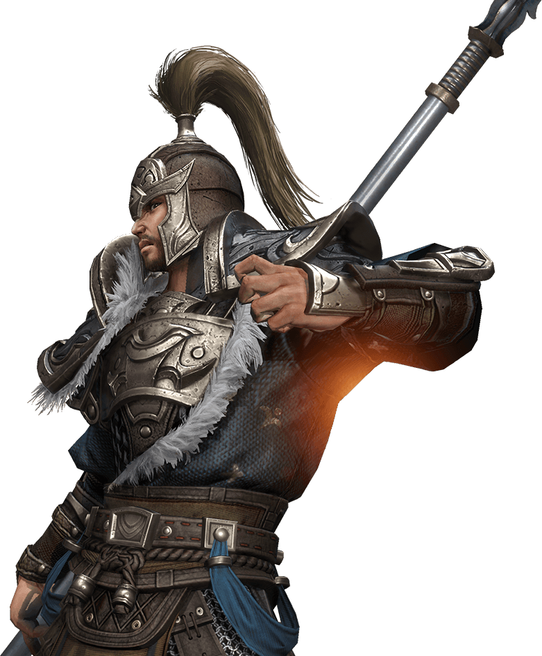
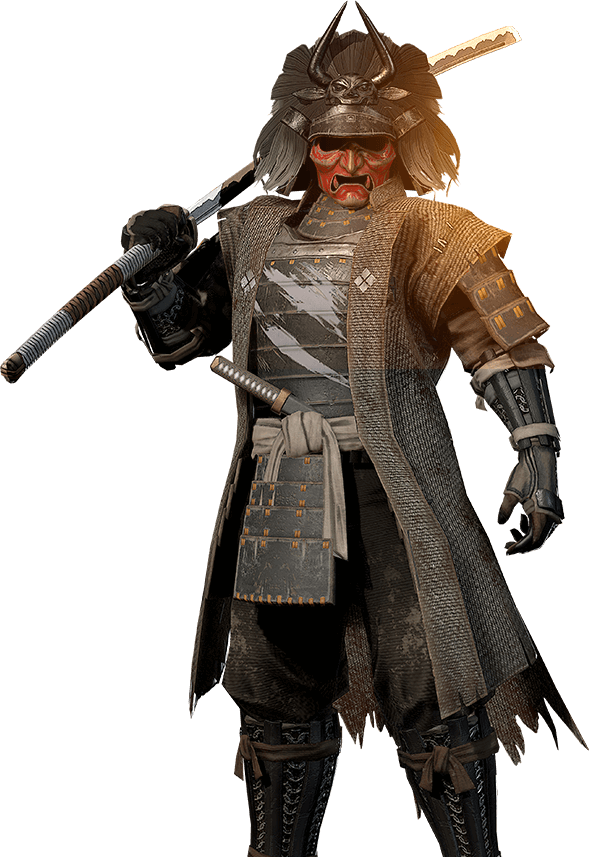
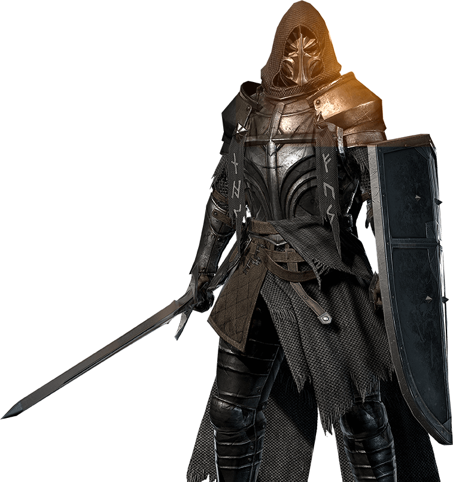
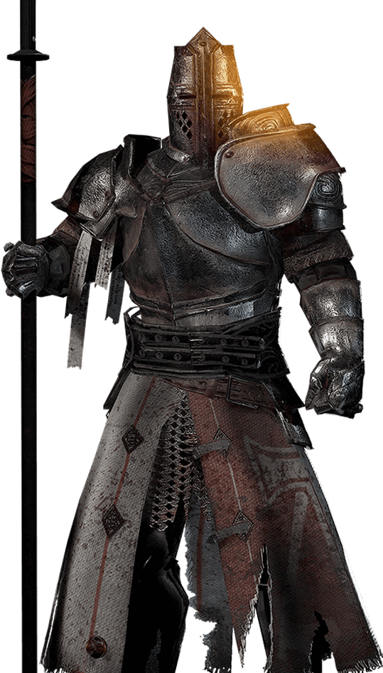
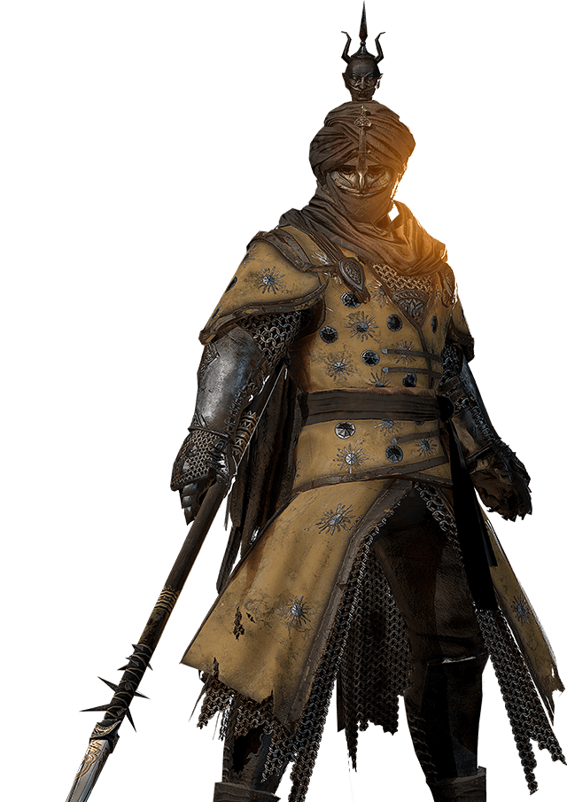

- 刀盾合击之术最早出现在战国时期。魏国吴起手下的精锐部队就是“左执铁盾，右执刀剑，身被重铠”，战斗时，他们直接冲入敌阵砍杀；攻城时，他们首先登上扶梯。这种攻守兼备的配置，威力巨大。洪武二年朱元璋在南京设效义营，营内将士皆执刀盾，正逢北伐，他们一路披荆斩棘，素有“斩万军阵中之千敌，挡狼烟漫天之箭雨”
之称。名将戚继光更专为刀盾创“纪效八式”在军中推广，遂逐渐成为了明军中最常见的冷兵器。
- 弓箭作为远射兵器，在春秋战国至宋代一直普遍应用，被列为兵器之首。射箭则为儒家推崇的“君子六艺”之一，备受尊崇。一直以来，长弓以其远距离的精准狙杀能力，深受名将喜爱，而含恨于弓箭之下的名将更是数不胜数。明朝开国大将常遇春其人便极为擅长射术，人称“小李广”，在率军攻占洛阳的战事中，元将帖木儿摆出“骑兵八阵”，明军屡攻不下，常遇春百步外重矢骤发，击毙阵中帖木儿，一举破敌。
- 长柄刀自西周起便装备了军队，至三国时已成为有数的装备，一直以来以势大力沉，劈砍威猛的特点，极受猛将的喜爱。明代白话小说《三国演义》中的武圣关羽，便是以一把“青龙偃月刀”斩无数敌酋，长柄刀因此也被俗称“关刀”。持关刀于战场威风凛凛，一刀可斩千敌。明代《续武经总要》中言:“十将九人执关刀，一刀三百六十斤。”夸张的表达不仅强调了关刀出击时惊心动魄的震撼，也可见其厚重之手感。
- 野太刀装备于古代日本的攻坚部队，活跃于镰仓末期至室町中期年代，著名剑豪佐佐木小次郎擅长使用的兵器，目前现存的流派以大太刀为主的主要有林崎梦想流的大太刀拔刀术、景流（阴流）野太刀术、古传圆心流大太刀组讨术和柳生新阴流奥传的大太刀术。佐佐木小次郎是日本著名剑豪，擅长使用野太刀，自创“岩流”一派，后自称“岩流小次郎”。由于野太刀剑身长度大，攻击范围大，小次郎剑术高超能够完美发挥出野太刀的威力。
- 随着中世纪板甲的出现和应用，为追求破甲而铸造的宽刃巨剑变得英雄无用武之地，毕竟人的臂力是有限的。当宽刃剑走投无路时，另一种设计思路却开始大行其道，将剑身打造的尽量窄而细长，以牺牲劈砍能力为代价获得更好的灵活性和穿刺能力。这种细刃剑的好处是使执剑者能够容易瞄准板甲接缝处和薄弱的颈、腋等关节部位下手，准确而致命地打击敌人。身着链板甲，手持精品手半剑以及盾牌，高贵而忠贞的剑盾武士成为了战场中不可忽视的力量。
-
长柄战斧是欧洲战场上的重要兵器。随着重型板甲在战斗中的出现频率越来越高，对武器破甲能力的需求也就越来越强，因此沉重且杀伤力巨大的长柄战斧在战斗中的地位显得越加重要。长柄战斧一般有约2米长，战斧头部带有长刺用于刺击，厚实沉重的斧面赋予了其巨大的威力，柄尾部也有金属重物，可以用来造成极强的钝击伤害。武将手持巨大长柄战斧，身着重型板甲，其巨大的破坏力以及极强的防护效能成为了敌人的梦魇。
- 大陆腹地的沙漠民族长久以来承担了交流东西方枢纽的作用，沙民们的武器也同时结合了东西方的特色。在见识过来自东方的枪术之后，沙民们自然而然地想到了对传统长矛的改进——为矛头加上更宽阔的刃，将矛杆从传统的一丈出头缩短至一丈以内，再在矛尾配上重物之后，原本只能用于冲锋和戳刺的长矛，变得灵动起来，可以适应近身格斗。
了解更多

刀盾武士

长弓武士

关刀武士

野太刀武士

剑盾武士

战斧武士

战矛武士